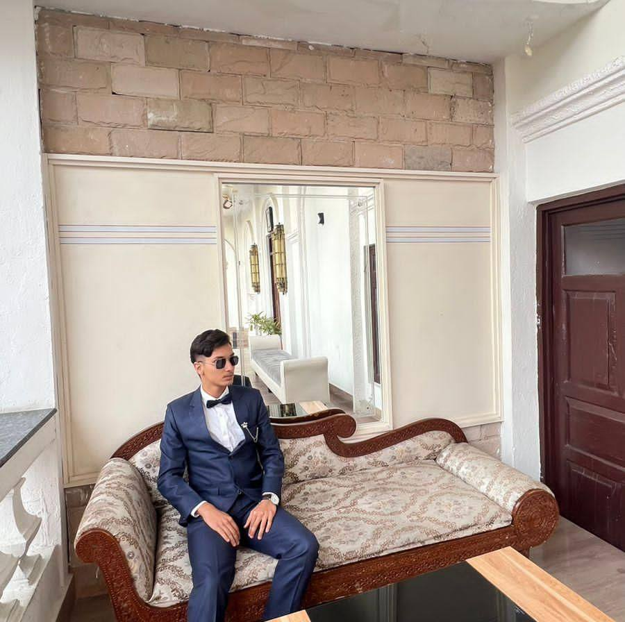

Hi, I’m Manab Pokharel, a passionate web developer who loves turning ideas into clean, modern, and user-friendly websites. I specialize in HTML, CSS, JavaScript, and Java, and I enjoy building interfaces that look great and perform smoothly. I focus on writing clean and organized code, creating responsive layouts, and crafting designs that work perfectly across all devices. I’m always learning new tools, improving my skills, and exploring better ways to create beautiful digital experiences. My goal is to help people and businesses build websites that are fast, functional, and visually appealing. I’m open to freelance projects, collaborations, and opportunities to work on exciting web development ideas.